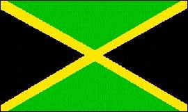

Jamaica
|  |
Información general
Nombre oficial: Jamaica
Área: 10 991 km²
Costas: 1 022 km
División política:13 parroquias:
- Clarendon
- Hanover
- Manchester
- Portland
- Saint Andrew
- Saint Ann
- Saint Catherine
- Saint Elizabeth
- Saint James
- Saint Mary
- Saint Thomas
- Trelawny
- Westmorland
- y una administración especial en Kingston
Unidad monetaria: Dólar de Jamaica
1 Dólar de Jamaica = 100 centavos
Idiomas: Inglés (oficial)
Fiesta nacional: 6 de agosto, Independencia
Gentilicio: Jamaiquino
Hora oficial: GMT -5 horas (normal), -4 (verano)
Miembro de: ONU, Commonwealth, CARICOM, OEA
Curiosidades
Jamaica es la tercera de las Antillas por su tamaño.
La máxima altura de Jamaica es el Monte Azul con 2 240m.
Jamaica es conocido mundialmente por el reggae, género musical inmortalizado por Bob Marley.
Información adicional en Internet.
Perfil
Ecónomico
Perfil Demográfico
{kind=link}
Población: 2.7000.000 hab.
Densidad de población: 244 hab/km²
Perfil Cultural
Alfabetismo: 87 %
Religión:
- Protestantes: 50,4%
- Anglicanos: 14,0%
- Católicos: 11,3%
- Espiritistas afroamericanos: 7,5%
- No religiosos: 3,9%
- Otros: 12,9%
Jamaica es la cuna del culto rastafariano, cuyos seguidores creen en la divinidad del difunto emperador etíope Haile Selassie.
Sistema de Gobierno
Constitución vigente: 6 de agosto de 1962
Sistema ejecutivo: Monarca británico (Jefe de Estado, representado por el Gobernador General), Primer Ministro (Jefe de Gobierno, nombrado por el Gobernador General de entre los miembros de la Cámara de Representantes), Gabinete (nombrado por el Gobernador General por recomendación del Primer Ministro).
Sistema legislativo: Cámara de Representantes (sesenta miembros elegidos por sufragio para un período de cinco años), Senado (veintiún miembros designados por el gobernador general, trece recomendados por el Primer Ministro y ocho por el líder de la oposición).
Aproximación histórica
Situada en el Mar Caribe, al sur de Cuba, se encuentra Jamaica.
Descubierta por Colón en su segundo viaje, en 1494, permaneció en poder de España hasta 1655, en que pasa al dominio de los ingleses.
En 1944 el Reino Unido otorga una Constitución que establece el sufragio universal y la formación de un Parlamento de dos cámaras.
En 1962, Jamaica se convierte en un Estado soberano, dentro de la Comunidad Británica.
El relieve de la isla está determinado por una cordillera que ocupa las dos terceras partes del territorio y que la surca de este a oeste.
La economía de Jamaica está basada en la agricultura, el procesamiento de bauxita y óxido de aluminio. El turismo es una importante fuente de ingresos.
«-- ir al comienzo
«-- regresar